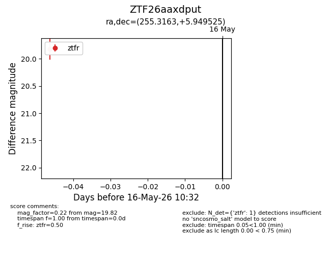
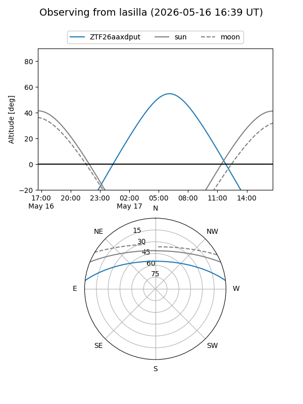
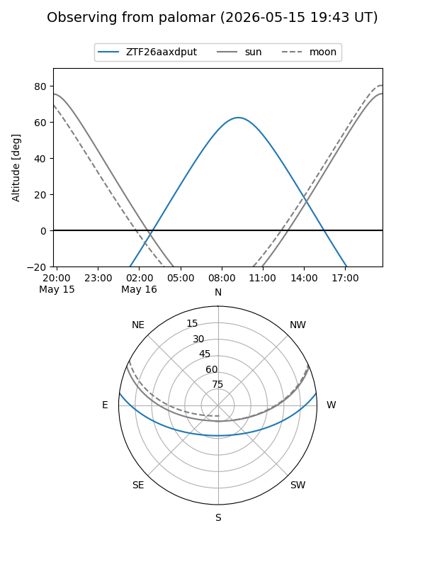

ZTF26aaxdput
Target ZTF26aaxdput at 2026-05-16 10:34
Aliases and brokers:
FINK: link
Lasair: link
ALeRCE: link
alt names
ZTF26aaxdput (ztf,fink_ztf)
Coordinates:
equatorial (ra, dec) = 255.3163,+5.94952
equatorial (HMS+DMS) = 17:01:15.92,+05:56:58.29
galactic (l, b) = (25.3447,+27.16744)
Flags:
Photometry:
last ztfr=19.82
1 ztfr detections
Lightcurve

Visibility


Additional plots